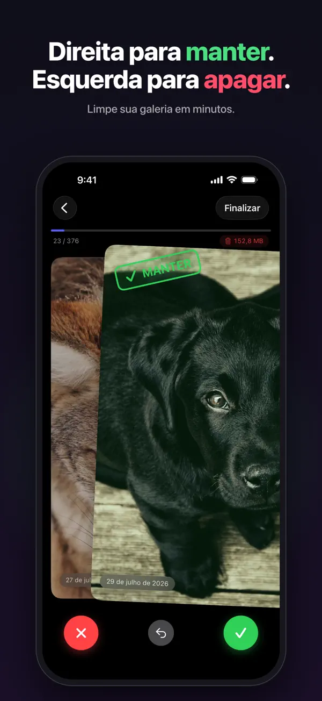
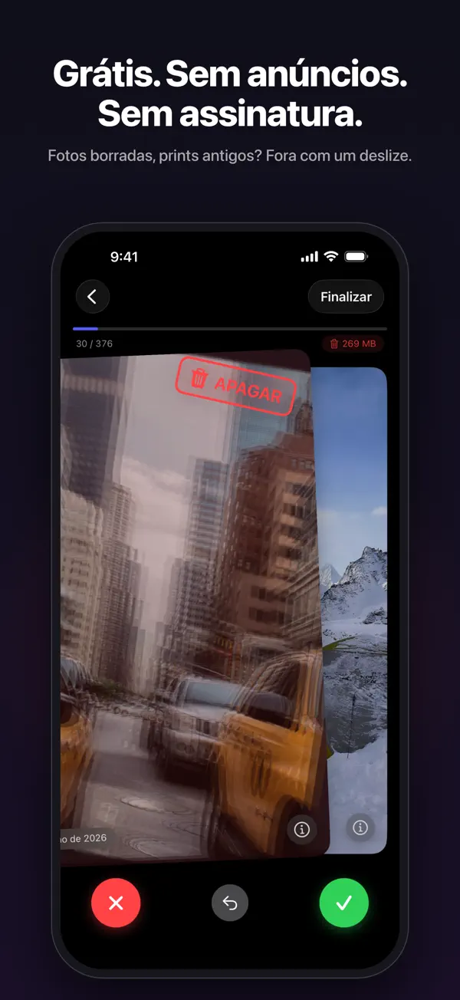
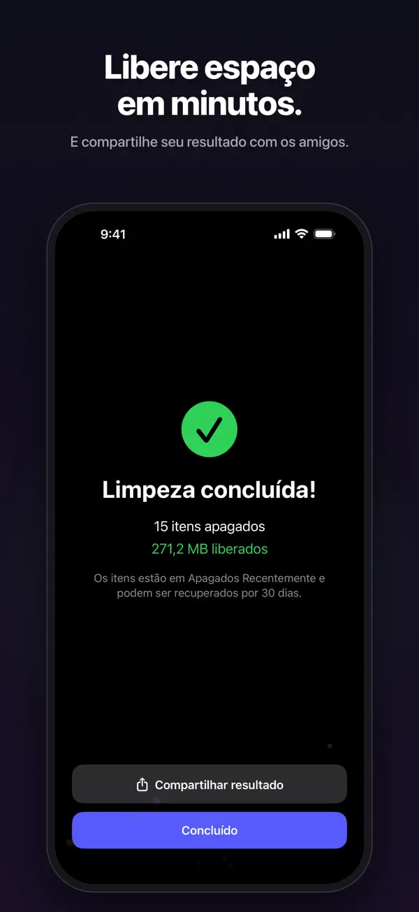

Deslize pelas suas fotos.
Libere seu iPhone.
Esquerda apaga, direita mantém. Grátis, sem anúncios, sem assinatura, e suas fotos ficam no seu celular.
Baixar na App Store



Esquerda apaga, direita mantém. Grátis, sem anúncios, sem assinatura, e suas fotos ficam no seu celular.
Baixar na App Store

